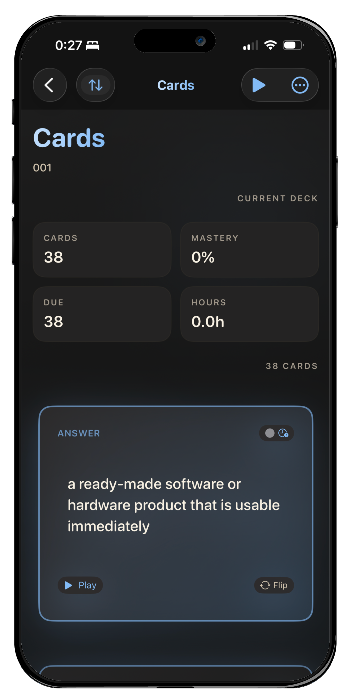
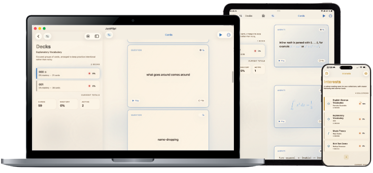
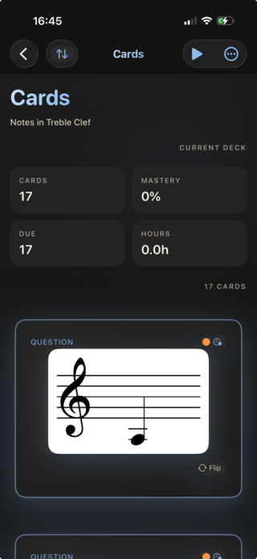
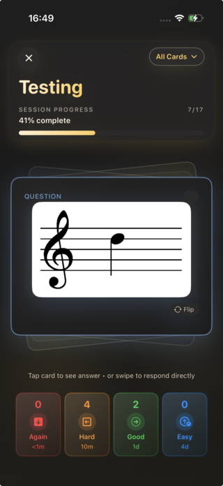
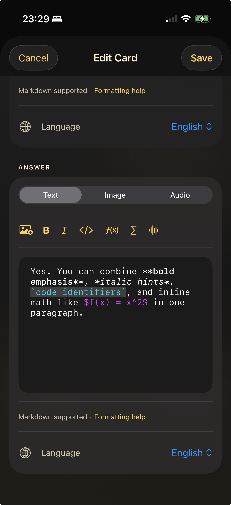
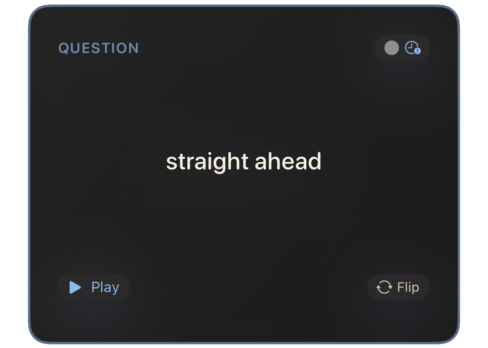
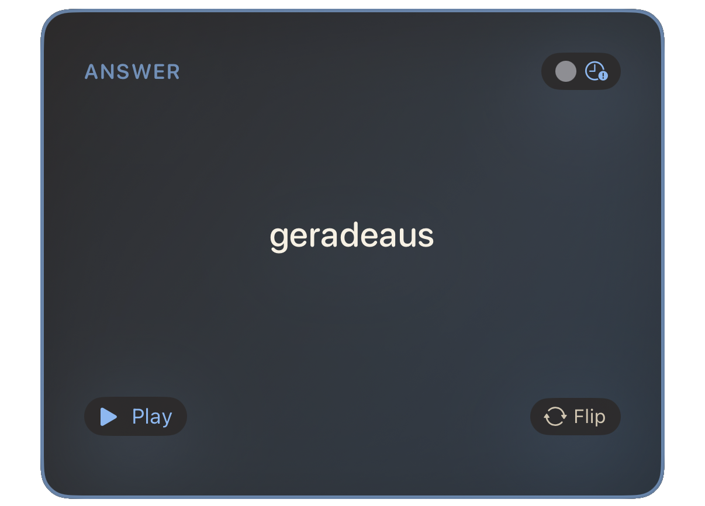
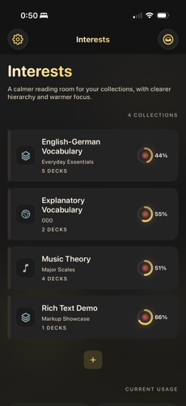
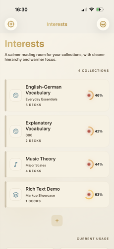

A flashcard app for the effective studying
Study quietly.
Remember everything.
JustFlip! is a spaced-repetition flashcard app for iPhone, iPad and Mac. Curate your decks on the desktop, review them on the go, and trust an SM-2 inspired engine to surface the right card at the right moment.

One library.
Three companions.
Capture and curate on the Mac. Review on the iPhone over morning coffee. Annotate on the iPad in the margins. iCloud keeps every card, every interval and every streak in perfect sync — without ever asking you to think about it.

Let the AI write the deck.
Two ways to create decks — full rich-content cards with agentic coding tools, or simple text-only sets directly in ChatGPT.
A library you can swipe through.
Browse decks as a calm, editorial list — or enter a focused review and judge each card with a Tinder-style swipe. Right for good, left for again, up for easy. The flow stays in your hand.


A patient algorithm.
Five states. Infinite memory.
JustFlip! runs a refined SM-2 engine across five learning states. Cards travel through unseen, learning, reviewing, relearning and graduated, each with its own interval and ease. Urgency tells you what is most worth your time today.
- UnseenNever studied — ready for first contact.
- LearningMinutes to a day. Fresh memory taking shape.
- ReviewingDays to weeks. The interval grows by ease.
- RelearningForgotten? Back to short intervals, gently.
- GraduatedWeeks to months. Long-term retention.
Ease grows on easy, settles on good, and contracts on hard or again — never below 1.3.
Cards that read like essays.
Define your cards in rich Markdown — headings, lists, code blocks, inline math, images and links. JustFlip! renders them with editorial typography so a card can be a one-line cue or a small piece of scholarship.

Decks that speak.
Let your cards read themselves out loud while you walk, cook, or drive. JustFlip!'s home-screen widget keeps the next review one tap away — a small, golden invitation to do five minutes of practice.


Dark by candlelight.
Light by morning.
JustFlip! respects the system. Switch from a deep, scholarly dark to a soft parchment light — the gold and slate of the design system stay true at any hour.


Available soon on Apple platforms
Bring JustFlip! to your shelf.
One purchase. Three platforms. A lifetime of well-spaced review.
Available in English, Deutsch, Français, Español & Čeština.